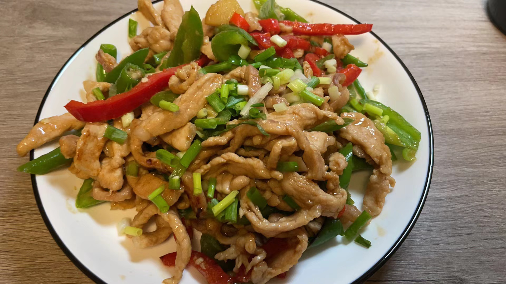
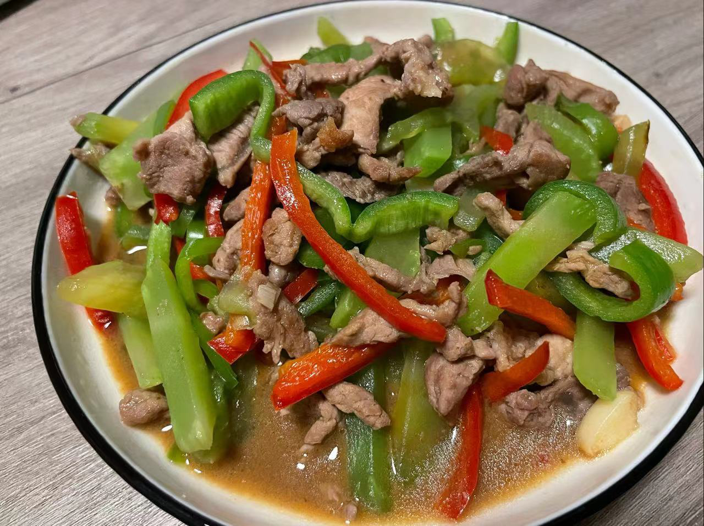
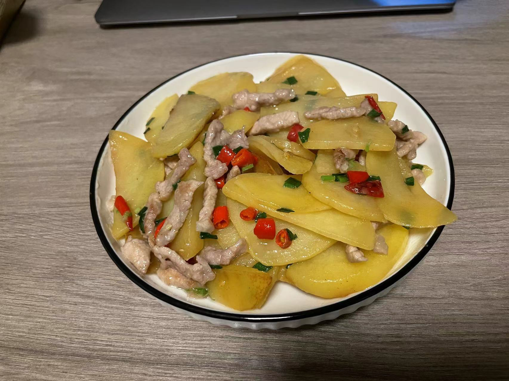
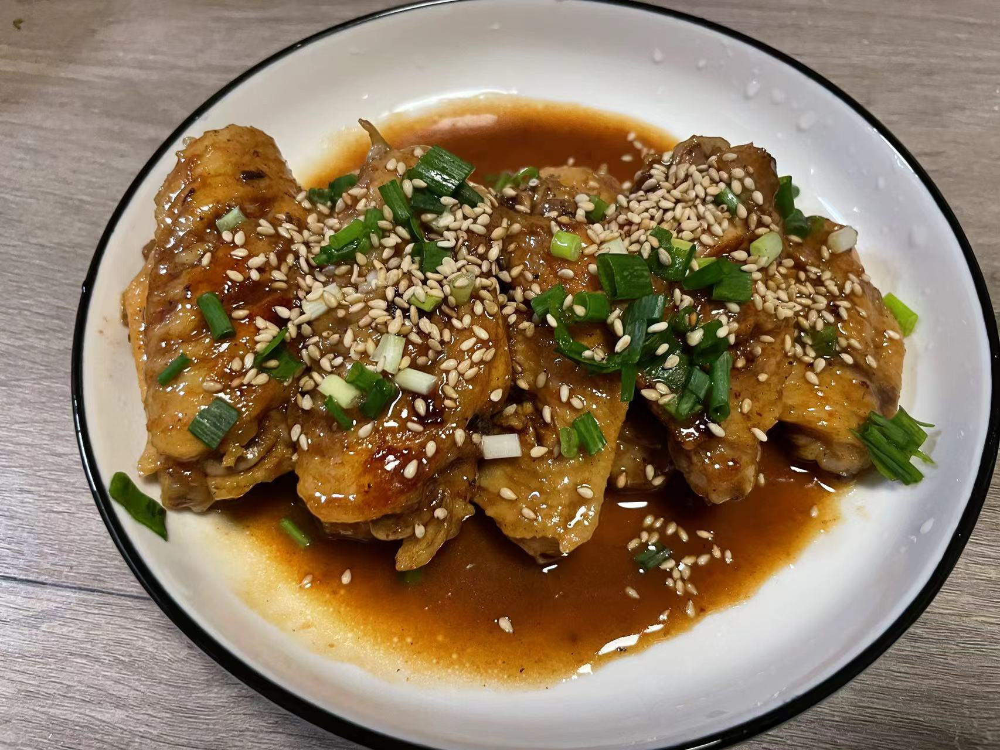
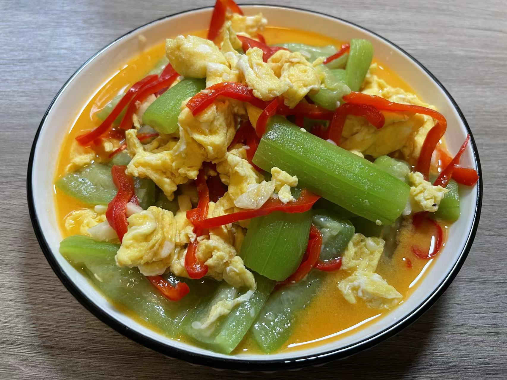
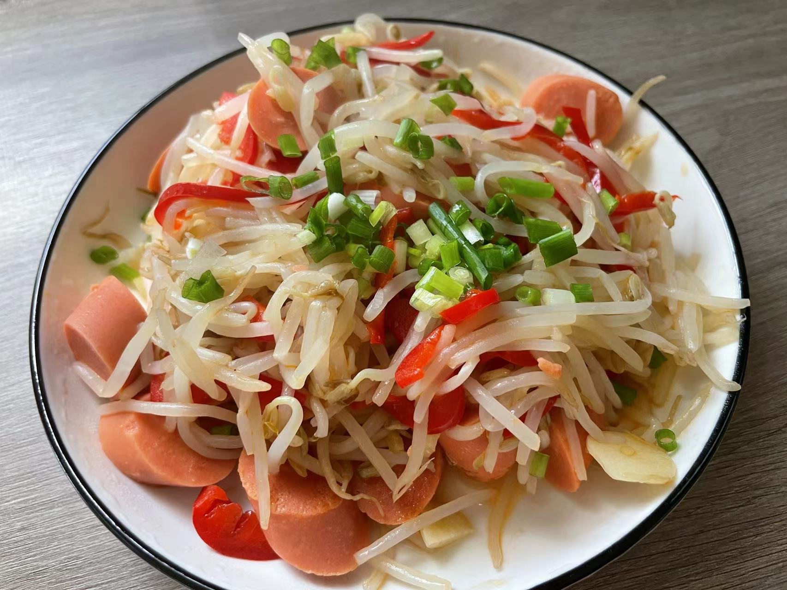
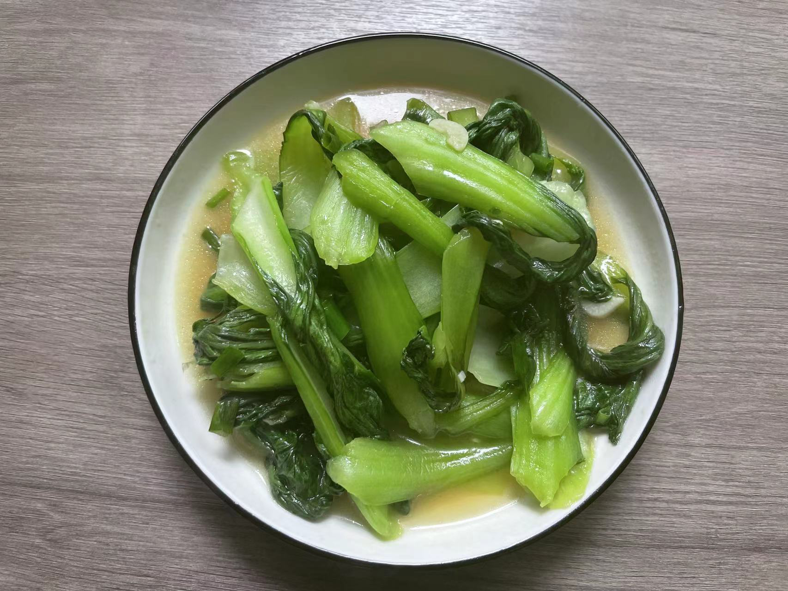
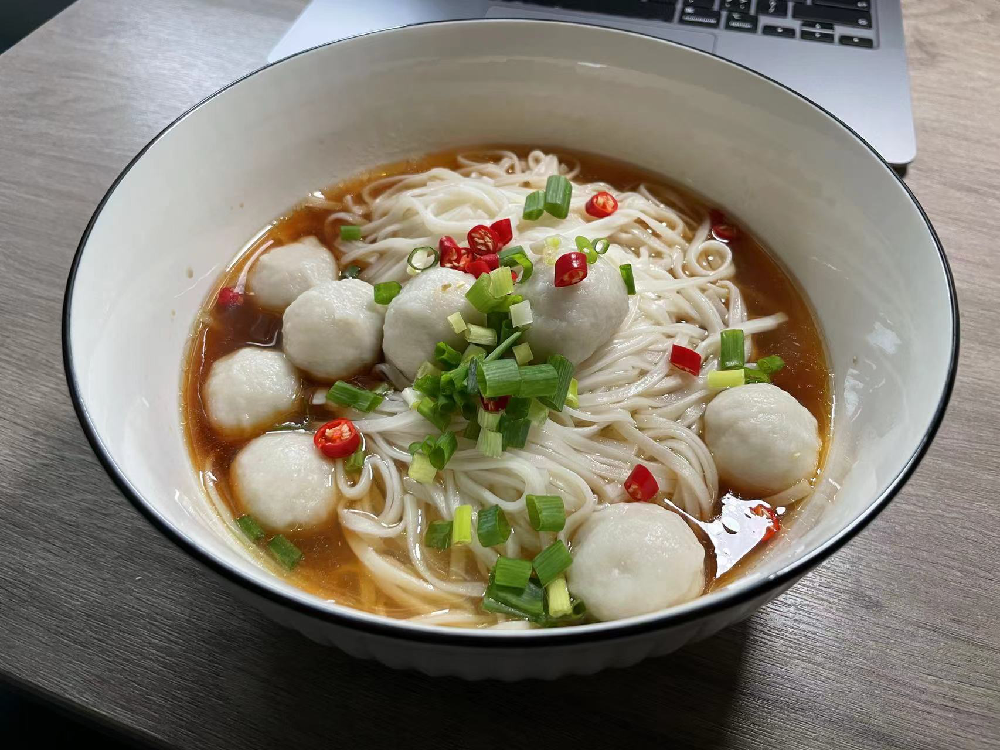

个人食谱
养生必读
- 绿豆芽：解毒
- 胡萝卜：健脾
- 鸡胗：补血
- 青椒：湿中散寒
- 红椒：开胃、消食
- 料酒：低蛋白质
- 洋葱：杀虫
菜谱
肉类
青椒肉丝（香辣肉丝）（青椒土豆丝）
食材：猪肉丝、青椒丝、红椒丝、土豆丝（清水浸泡）、葱段、姜丝、蒜片、生抽、料酒、淀粉、葱花。（加香菜即可做香辣肉丝）
- 肉丝、（盐）、料酒、生抽、（蛋清）、水淀粉，腌制10分钟。（土豆丝水开焯水）
- 中火油热五成熟，肉丝快速滑散至断生。炒太久会材，糖、老抽
- 锅里留油，（花椒）葱姜蒜，炒香，青红椒丝、土豆丝断生，倒入肉丝
- （香菜段），盐、鸡精、水淀粉
- 葱花。

莴笋炒肉丝
食材准备：同青椒肉丝
步骤：青椒换莴笋丝

土豆炒肉片
食材：猪肉、土豆、葱花 腌料(盐、鸡粉、生抽、五香粉、淀粉、油)
- 猪肉切片，盐、鸡粉、生抽、五香粉、淀粉、油，抓匀腌制30分钟，土豆切片，葱切葱花
- 锅中倒油，油热后放入猪肉炒至八成熟，盛出备用
- 另外取一平底锅，倒入适量的油热后放入土豆片翻炒
- 其间要不断地翻炒，免得土豆片贴在一起
- 炒至土豆片变色变软时加入猪肉翻炒片刻
- 加入适量的盐、鸡粉翻炒均匀
- 倒入葱花，翻炒均匀即可关火出锅

可乐鸡翅
- 在生鸡翅上划刀(两面)，用两勺老抽、两勺料酒腌30分钟以上，有时间可以提前腌制。
- 锅中放水煮开，鸡翅下锅煮沸出浮沫后，立即捞出沥干。
- 中火，锅中放一点油，将鸡翅煎成金黄。
- 然后将可乐300ml、酱油1勺、料酒1勺倒入锅中。
- 中火炖至汤汁浓稠并且裹在鸡翅上即可。
啤酒鸡翅
食材：鸡翅6个、啤酒330ml、香叶、八角、桂皮、老抽、胡椒粉、油、盐、糖、鸡精、姜、（干辣椒、花椒）
- 将姜切片和桂皮半个、八角3个、香叶1片排盘
- 鸡翅改刀，倒入锅中，没水，大火焯水，出锅沥水
- 热锅凉油，鸡翅煎至两面微黄
- 将鸡翅拨到一边，倒入步骤1的准备料，煸炒出香味（也可鸡翅盛出煸香料）
- 加入老抽煸炒上色
- 倒入没过鸡翅的啤酒，盖盖大火转中火焖10分钟
- 10分钟后，加盐、糖、胡椒粉再焖5分钟
- 时间到，汤汁要很少，不少再收汁一会，加点鸡精提鲜，关火出锅

爆炒鸡胗
食材：鸡胗10个、青椒1个、红椒1个、生姜1块、大蒜3瓣、泡椒适量、料酒1勺、花椒适量、辣椒粉适量、盐、油、胡椒粉、鸡精、洋葱、香葱
- 切好的鸡胗，放盐、1勺料酒、适量的辣椒粉、花椒，腌制30分钟入味
- 姜、蒜、泡椒切碎，切葱花
- 青椒、红椒、洋葱切小块
- 锅内放油，放姜蒜爆香
- 放入鸡胗，大火翻炒，断生后盛出
- 锅内再放一丢丢油，放洋葱、青椒、红椒翻炒
- 放入盐，鸡胗，翻炒
- 放一勺生抽，翻炒
- 放胡椒粉、鸡精
- 撒上葱花，翻炒均匀，即可出锅
干锅鱿鱼头
食材：鱿鱼须、葱、姜、料酒、洋葱、小米辣、韭菜段、（白芝麻）
- 鱿鱼头切开，开水下锅，放葱姜、少许料酒，焯烫30秒捞出
- 热锅凉油，洋葱、小米辣爆香，放入麻辣香锅酱（用豆瓣酱和辣椒酱代替试试）
- 倒入鱿鱼须，翻炒几下，撒入韭菜段、（白芝麻）即可出锅。
哈蜊酿虾滑
素菜
丝瓜炒蛋
食材：丝瓜1大根（2小根）去皮切段、大红椒半个切丝、鸡蛋2个、蒜2瓣切片、油、盐
- 鸡蛋打入碗中，放盐搅拌均匀，
- 热锅放油，倒入鸡蛋液，煎至成形，装盘待用
- 锅里留油，放蒜爆香，放丝瓜翻炒
- 放适量清水，煮熟，放入红椒丝点缀。
- 放入鸡蛋，翻炒均匀
- 放入盐，翻炒均匀
- 出锅

绿豆芽
食材：适量绿豆芽、蒜头、葱花、红尖椒、胡萝卜、油、盐、鸡精、生抽、醋、白糖
- 绿豆芽洗净，蒜头切片、红椒切丝、（火腿肠切片）、（少量胡萝卜切丝）、香葱切丁
- 凉油，小火下蒜头、（胡萝卜/火腿肠）炒几下
- 倒入绿豆芽、红椒丝，大火翻炒，洒适量清水。调入适量盐、鸡精、生抽、醋、少许白糖，炒至绿豆芽软化
- 洒葱花出锅。

炝炒小青菜
食材：小青菜1斤洗净、大葱白3节切片、大蒜2瓣切片、生抽1勺、盐1勺、五香粉半勺
- 起锅烧油，油温7成热，倒入葱白爆香
- 倒入小青菜，快速翻炒变色
- 倒入蒜末翻炒均匀，加盐、五香粉、生抽，翻炒均匀即可出锅

金针菇炒鸡蛋
食材：鸡蛋、蒜末、金针菇、油、生抽、耗油、黑胡椒粉、葱花
- 热锅热油，打入鸡蛋打散
- 加油，蒜末，放入金针菇，炒至变软
- 加入做好的鸡蛋，翻炒一会
- 加入1勺生抽、1勺耗油、半勺黑胡椒粉
- 翻炒均匀，撒上葱花即可。
香煎豆腐
食材：北豆腐1快、葱白切段、葱花、姜切片、蒜切片、油、干辣椒、料汁（盐、白糖、蚝油、生抽、胡椒粉、鸡精、清水）
- 豆腐切薄厚适用的块，香葱切花
- 调料汁：盐、白糖、蚝油、生抽、胡椒粉、鸡精、清水
- 热锅凉油，豆腐煎至两面金黄色，盛出备用
- 锅里留油，葱白、姜、蒜、辣椒爆香
- 放入煎好的豆腐，倒入调料汁，不停的翻面
- 让豆腐两面都粘上调料汁
- 出锅前撒上葱花，一会，即可出锅
水饺料碟
简易版：醋、辣椒酱、小米辣切丁
香菜、蒜泥、香葱、洋葱、辣椒面、黑芝麻、白糖、食盐、香醋（或者陈醋）、生抽、耗油
速冻水饺
- 水将要沸腾时（我的锅冷水5分钟），温水下入水饺、食盐
- 煮至水沸腾（第16分钟），加入2次凉水
- 水饺全部浮上即可。
阳春面
- 水沸腾后，下挂面，放入适量食盐，煮3分钟左右，(中间添几次冷水，避免水溢出。)
- 捞出浸凉水（面汤沸水煮鱼丸4分钟至熟）
- 调料：老抽、生抽、醋、猪油（芝麻油）、鸡精，倒入高汤（或面汤）
- 面条控水，放入汤底，撒上葱花、小米辣。

火锅
食材：鱼丸、鱼豆腐、香肠、蟹棒、花菜、西兰花、金针菇、豆皮、番茄
火锅料、番茄酱
火锅菜单主要有五大类食材：蔬菜类、肉类、水产类、豆制品类和主食类。
一、蔬菜类：包菜、大白菜、豆芽、黄瓜、香菇、黄花菜、藕片、香菜、生菜、小青菜、土豆片、金针菇、蘑菇、黄花菜。
二、肉类：鸡翅、鸡爪、鸭舌、蟹柳、香肠、红肠、羊肉卷、羊肉串、牛百叶、鱿鱼、鱼片、猪腰、猪脑、里脊肉、牛肉、 驴肉 、鸡蛋、锅巴、水饺、南瓜饼、米饭、方便面、鱼丸、虾丸、鸭肠、午餐肉。
三、水产类：鲫鱼、草鱼、鲤鱼、鳝鱼、泥鳅、河蟹、河虾、海蟹、海虾、水发海参、墨鱼、水发鱿鱼、水发鱼肚、鱼唇、鱼翅、鲜贝、带鱼以及水发海带等。
四、豆制品类：豆腐皮、腐竹、冻豆腐、日本豆腐、素鸡、茶干、豆腐泡、千张结。
五、主食类：手擀面、杂粮面、宽粉、粉条、粉丝、玉米、油条、年糕。扩展资料：美味火锅健康吃法：1、吃火锅一周别超过一次，吃多了容易上火。
而且吃时不宜打“持久战”，最好控制在2小时以内。此外，吃火锅的人常常吃完肉就忘记了主食、蔬菜，容易营养结构不均衡。因此，享美味之时，别忘了主食、蔬菜、肉类和豆类等搭配进食，要吃就吃“健康火锅”。2、营养专家表示，选择火锅材料时，不论是肉类还是蔬菜，首先最重要的是要新鲜。选材上除了肥牛、羊肉、狗肉、鱿鱼等肉类外，可以增加一些凉性蔬菜，如冬瓜、小白菜、西洋菜、莲藕等，喜欢吃苦味的市民，还可以来点苦瓜。3、在汤底放点不去芯的莲子，不仅有助于均衡营养，还有清心泻火的作用。而加点豆腐，不仅能补充多种微量元素的摄入，还可以发挥豆腐里石膏的清热泻火、除烦、止渴的作用。
- 白灼虾
- 凉拌黄瓜
- 凉拌土豆丝
- 辣子鸡翅
- 孜然土豆火腿肠
- 青椒酿虾滑
- 五花肉辣炒藕片
- 蒜苔肉丝
- 五花肉鹌鹑蛋
- 腊肠炒蒜苔
- 黄焖鸡
- 土豆烧豆角
- 地三鲜
- 翅根卤蛋
- 柠檬手撕鸡
- 宫保鸡丁
- 爆炒四季豆
- 干锅土豆片
- 莴笋炒肉
- 红烧日本豆腐
- 酸辣土豆丝
- 青椒杏鲍菇
- 黄瓜炒鸡丁
- 金针菇炒蛋
- 水饺/锅贴/面
- 虾仁滑蛋
- 四季豆炒肉丝
- 番茄土豆香菇肥牛锅
- 牛排
- 土豆胡萝卜咖喱鸡
- 冬瓜/玉米/白萝卜 排骨汤
- 番茄蛋汤
- 杭椒五花肉（电锅煸不干）莴笋炒肉
- 青椒炒杏鲍菇
- 青椒（+火腿肠）炒蛋
- 番茄炒蛋
10道经典排骨汤的做法大全
一、玉米排骨汤

材料：
玉米、猪肋排、葱、姜、盐。
做法：
1.将排骨剁成块状，长短随意。
2.玉米去皮、去丝，切成小段。
3.葱切段，姜切片。
4.砂锅内放水，将水烧开，将锅内的血沫子倒掉（烧开即可，时间控制）
5.往锅里倒油，爆炒一下排骨，倒水(若想排骨汤鲜些，可在水中滴两滴醋)加玉米，姜(无需太多一两片即可)一起放入锅中，滴入少许白酒，大约煮40分钟。
6.煲熟，加入少许盐调味即可。
二、山药排骨汤
材料：
山药、排骨、葱、姜、盐、料酒。
做法：
1、山药洗净，去皮切断。
2、排骨洗净，锅里加满水，煮开，撇去浮沫；
3、放姜片葱结，加黄酒，转小火；
4、煮20分钟，捡去葱结，放山药，开中火沸腾后再转小火；
5、半小时后加适量盐，煨15分钟至山药排骨酥烂即可。

三、海带排骨汤
材料：
猪排骨400克，海带150克，葱段、姜片、精盐、黄酒各适量。
做法：
1.将海带浸泡后，放笼屉内蒸约半小时，取出再用清水浸泡4小时，彻底泡发后，洗净控水，切成长方块
2.排骨洗净，用刀顺骨切开，横剁成约4厘米的段，入沸水锅中煮一下，捞出用温水泡洗干净
3.净锅内加入清水，放入排骨、葱段、姜片、黄酒，用旺火烧沸，撇去浮沫，再开用中火焖烧约20分钟，倒入海带块，再用旺火烧沸10分钟，拣去姜片、葱段，加精盐调味，淋入香油即成。

四、莲藕排骨汤
材料：
排骨半斤，莲藕一块，琼珍灵芝15克。盐2勺，花椒一小把，八角一小块，姜一小块。
做法：
1、莲藕切片或块。姜切片。
2、烧热水，水开后放入排骨，焯一下，取出排骨，把水倒掉。
3、把切好的莲藕和姜片放入琼珍灵芝壶中，加入水，根据壶身上的水位表加到1.8L的位置。把琼珍灵芝掰两半，放入壶中。
4、放入花椒和八角，放入2勺盐。盖上壶盖，扣紧，选择2药膳功能，就不用管了。

五、冬瓜排骨汤
材料：
冬瓜200g，猪排骨100g，香油、葱、姜、花椒、食盐、味精各适量。
做法：
1、冬瓜去皮，洗净，切块。
2、猪排骨洗净，剁块。
3、葱洗净，切段。生姜洗净，切片。花椒研细。
4、将猪排骨放入锅中，加清水适量煮沸后，去浮沫，下冬瓜及葱、姜、椒等调味品。
5、煮至排骨、冬瓜熟后，下食盐，味精，再煮一二沸即成，最后淋上香油。
六、土豆排骨汤
材料：
排骨1000克，土豆500克，大葱1根（小葱5-6根），姜5片，料酒、盐、味精各适量。
做法：1、把排骨斩成小块，洗净沥干水分；土豆去皮适当切块；大葱切段（小葱打结）。2、将排骨放在开水锅中烫5分钟，捞出用清水洗净。3、将排骨、葱姜、料酒和适量清水，上旺火烧沸，再改用小火炖至半熟时，放入土豆炖至熟烂，再加盐、味精起锅即可。
七、蕃茄排骨汤
材料：
排骨500克，番茄250克，番茄酱40克，姜片少许，盐适量，料酒1小匙。
做法：
1、排骨在清水中适当的泡一泡，以泡去多余的血水，然后洗净
2、洗好的排骨需要汆烫2分钟，捞起用凉开水冲去血水、血沫备用
3、取来汤锅，置火上，加适量开水，放入姜片，排骨，料酒，炖至排骨烂熟，这个过程大概需要1-1.5小时
4、待排骨烂熟时，再加入番茄，番茄酱，盐，再炖上一会就可以关火盛出了。在炖肉的时候，如果早放盐的话，肉则不易炖烂，所以盐要后放~番茄可根据自己的需要提前放入，如果希望口感更好，外观更好，最好把番茄的皮撕去。做这道汤的时候，不必放花椒、大料等调料，甚至连料酒都可以不放，只需姜片和番茄自然的酸甜味就可起到去腥提鲜的作用，调料放的太多反倒会掩盖番茄自然的香味。
八、萝卜排骨汤
材料：
排骨、白萝卜、葱、姜、枸杞、盐。
制作步骤：1、萝卜切小块、葱白切段、葱绿切葱花、姜切片。2、冷水放入排骨、一半量的姜片，焯一下排骨，排骨捞出冲洗干净。3、排骨、玉米、剩余姜片、葱白放入电饭煲，加水。4、煮至水去了1/3，将葱白捞出。5、放萝卜，放适量盐调味继续煮至萝卜熟。6、加枸杞，出锅前撒上少许葱花即可。

九、香菇排骨汤
材料：
排骨，香菇，姜片，料酒，糖，盐，少许鸡精。
做法：1、取十几个香菇，根据排骨多少适量调整，香菇中加少许淀粉，搅拌，静置一会等泥沙沉淀后捞出香菇，再洗一遍，用温水泡发。2、将排骨的血水洗干净，放入高压锅，加姜片加水没过排骨大火煮开后，去干净浮沫。3、放入料酒，香菇，加入一点点的盐少一点即可最后还要调味，虽然说最后加盐比较好，但是最后加盐感觉肉没啥味道，汤有味道，盖上盖子。4、上汽后转小火，响10分钟，关火。可以先做其他菜，让排骨闷一会，能打开盖子后，根据需要再加点盐和鸡精。
十、木瓜排骨汤
材料：
木瓜，排骨，红枣，葱段，姜，蒜，盐，料酒。
做法：
1、先将排骨洗净剁成一寸段，用热水川烫去血水，再捞起放入水中清洗，待凉后捞起备用。
2、取一只汤锅放入8杯水加热后放入排骨，熬煮约30分钟。3、将木瓜洗净去皮去籽后切块，放入汤中煮，再放入姜片、盐等煮至木瓜熟透即可熄火盛入汤碗中食用。
选菜指南
1
挑选蔬菜也是门学问，每一种菜都有自己的脾气。要会挑更要挑对，并不是贵的就好，还要看它的最适宜食用的季节等等因素。

1、菠菜的选购
菠菜有两个类型：一是小叶种，一是大叶种。不管什么品种，新鲜菠菜的特点是叶柄短、根小色红、叶色深绿。但在冬季，叶色泛红，表示经受霜冻，口感更好。菠菜消费的季节性很强，从10月至第二年4月历时半年均有上市，早秋菠菜因草酸含量高而带有涩味。如菠菜叶子上有黄斑，叶背有灰毛，表示感染了霜霉病，不宜购买。

2、芹菜的选购
芹菜主要有青芹、黄心芹、白芹和美芹四种类型。青芹和黄心芹味浓，脆嫩；白芹味淡，不脆；美芹味淡，脆嫩。
不宜买叶色浓绿的芹菜。因为这种“墨黑”叶子的芹菜，说明生间干旱缺水，生长迟缓，粗纤维多，口感上也老而生硬。
芹菜新鲜不新鲜，主要看叶身是否平直，新鲜的芹菜是平直的。时间较长的芹菜，叶子尖端会翘起，叶子软，甚至发黄起锈斑。

3、花菜的选购
选购花菜时，主要看两点：一是花球的成熟度，优质花菜以花球周边未散开为最好；二是花球的洁白度，优质花菜的花球洁白微黄、无异色、无“毛花”。花菜烹调前不宜用刀切花球，否则会造成花球粉碎散落，影响口感，而应该用手掰成朵状。

4、卷心菜的选购
选购卷心菜的标准是：叶球要坚硬紧实，松散地表示包心不紧，不要买。叶球坚实，但顶部隆起，表示球内开始变坏，口味变差，也不要买。卷心菜会出现“缺钙”现象，特征是叶缘枯死。这是一种生理病害。但不影响食用品质。食用时只要将枯死的叶缘部分去除即可。

5、姜和辣椒的选购
姜有新姜、黄姜、老姜、浇姜之分，新姜皮薄肉嫩，味淡薄；黄姜香辣，气味由淡转浓，肉质由松软变结实，是姜中上品；老姜，俗称姜母，即姜种，皮厚肉坚，味道辛辣，但香气不如黄姜；浇姜，附有姜芽，最适合用于配菜、腌制或酱制，味道鲜美。如果闻起来有淡淡的硫磺味或者其它异味，无论是什么姜都不要买。
买辣椒时，如果能吃辣就挑选形状弯弯的辣椒，如果不能吃太辣就买直溜溜的。辣椒的形状与其辣味息息相关，辣椒外形越弯辣味越重；相反，形状比较直的辣椒，辣味会弱一些。